A Guided Tour of Emacs
Table of Contents

Figure 1: GNU Emacs
The GNU Emacs Manual calls Emacs the extensible, customizable, self-documenting real-time display editor, but this description tells beginners little about what Emacs is capable of. To give you an idea, here is a sampling of the things you can do with Emacs:
Beyond just being able to edit plain text files, Emacs includes special features to help you write in many different human languages and programming/markup languages:
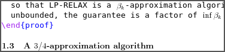
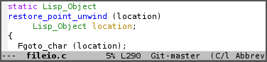
…as well as tools for compiling, running, and testing programs. Emacs integrates with GDB to provide an IDE (M-x gdb):
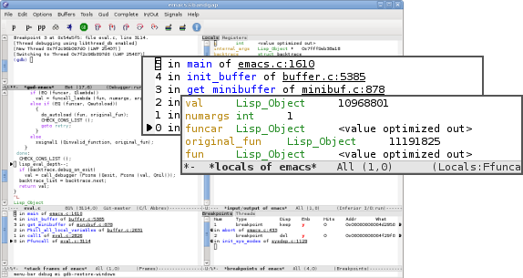
Emacs can compare two files and highlight their differences (M-x ediff):

Emacs is a file manager (M-x dired):
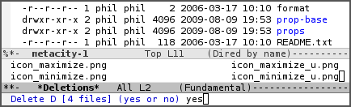
Emacs can read news, mail, and RSS feeds (M-x gnus):
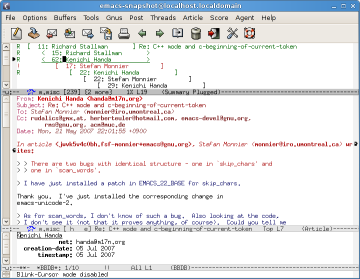
You can even play tetris in Emacs (M-x tetris):
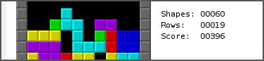
You might see now why some people consider Emacs to be not merely a text editor but almost a complete operating system. Some users find that they can do almost all of their work from within Emacs.
1 Why Emacs?
Emacs helps you be productive by providing an integrated environment for many different kinds of tasks:
- All of the basic editing commands (and there are lots of them) are available no matter what you're trying to do: write code, read a manual, use a shell, or compose an email.
- All the tools Emacs provides for opening, saving, searching, and processing text (and more) are available to you no matter what you're doing.
This uniformity means that working within Emacs is often easier than learning to use a separate program, especially when that program is liable to have its own set of editing capabilities and shortcuts.
If Emacs doesn't work the way you'd like, you can use the Emacs Lisp (Elisp) language to customize Emacs, automate common tasks, or add new features. Elisp is very easy to get started with and yet remarkably powerful: you can use it to alter and extend almost any feature of Emacs. You can make Emacs whatever you want it to be by writing Elisp code; one testament to this is the fact that all of the features pictured above (and many more described later in this tour) are written in Elisp.
Emacs is also portable. You can use the same editor (with the same configuration) on many platforms, including GNU/Linux, BSD and other Unix derivatives, and some proprietary operating systems such as Microsoft Windows.
2 Before we get started…
If you install Emacs first, you can follow along with the examples presented here. Whenever you decide to start using Emacs, you should take the Emacs tutorial. It's an interactive hands-on which will familiarize you with many things, including:
- Starting and exiting Emacs
- Basic text movement and editing commands
- Opening and saving files
- Emacs concepts: windows, frames, files, and buffers
- Invoking commands with keybindings and with
M-x
To run the tutorial, start Emacs and type C-h t, that is, Ctrl-h followed by t.
All the features described in this tour work in GNU Emacs 23. Some features described weren't included in previous versions of Emacs but can be installed separately.
Occasionally I'll say something like this:
See (info "(emacs)Using Region") for more information.
This refers to a page in the Emacs manual which you can read by following the link. However, you can also read such pages directly in Emacs by using the built-in documentation reader, called Info. To do this, press M-:, then type (info "(emacs)Using Region") followed by RET:

The Emacs manual is an excellent resource for learning about Emacs; you can read it from within Emacs by typing C-h r. You can also read the manual on the web.
Emacs has numerous other help features, some of which will be described later. You can view a list of all help features by typing C-h C-h.
3 The power of text manipulation
Emacs gives you a large collection of tools for manipulating text, which turns out to be a Swiss army knife of sorts because Emacs also has ways to present all kinds of information in text. Here's one example:
M-x dired invokes Dired, the file manager mode, on a directory of your choice. Then C-x C-q (or M-x wdired-change-to-wdired-mode) switches to Editable Dired mode:
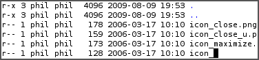
In this mode, changing the filenames in the right-hand column and then typing C-x C-s ("save") renames the indicated files. Renaming files is as easy as editing text. Batch renaming (e.g., renaming every file of the form icon_* to backup_icon_*) is as easy as performing a search and replace (M-x query-replace or M-%); there's no need to learn to use a separate batch renaming tool.
From within Emacs, you can interact with not just files and directories, but system utilities, compilers, debuggers, personal information managers, the web, email, chat, various other internet services, and more, and there's an ecosystem of third-party tools to make even more functionality accessible. Because of this integration, the benefits of learning to use any of Emacs' editing features (say, search and replace) are multiplied many times over.
4 Basic editing commands
One way that Emacs lets users work quickly and efficiently is by providing high-level commands for moving around in, and manipulating, text. There are commands that operate on characters, words, lines, sentences, paragraphs, pages, function definitions, whitespace, and more. You can use them anywhere you read or edit text: source code, web pages, shells, directory listings, email messages, and so on.
4.1 Moving around in buffers
The most basic buffer movement commands move point (the cursor) by rows (lines) or columns (characters):
| C-f | Forward one character | C-b | Back one character |
| C-n | Next line | C-p | Previous line |
Here are some ways to move around in larger increments:
| C-a | Beginning of line | C-e | End of line |
| M-f | Forward one word | M-b | Back one word |
| M-a | Previous sentence | M-e | Next sentence |
| M-v | Previous screen | C-v | Next screen |
| M-< | Beginning of buffer | M-> | End of buffer |
When you get used to these keys, they're faster than their more familiar equivalents in other applications (Home, End, Ctrl+Left, etc.) because you don't have to move your hands from the touch typing position. And these keys are far faster than using a mouse to move around in a buffer.
Emacs often provides additional commands for moving around in context-specific ways (e.g. in source code, commands to move to the previous or next function definition).
Many of the above commands move to a location relative to your current position in the buffer, so you can use them repeatedly (e.g. C-p C-p C-p to move back three lines). You can use the prefix argument to save time: C-u followed by a number and a movement command repeats that command the specified number of times. You can also use M-[digit] instead of C-u [digit]. If you use C-u without specifying a digit, the default is 4. Omitting the digit can save time when you don't know precisely how many units you want to jump anyway.
| C-u 3 C-p | Back 3 lines |
| C-u 10 C-f | Forward 10 characters |
| M-1 M-0 C-f | Forward 10 characters |
| C-u C-n | Forward 4 lines |
| C-u C-u C-n | Forward 16 lines |
| C-u C-u C-u C-n | Forward 64 lines |
You can jump directly to a particular line number in a buffer:
| M-g g | Jump to specified line |
Searching for text is a handy way to move around in a buffer. Think of search as just another facility for movement. When you're looking for something specific, you can use incremental search to take you right there instead of scanning by lines or pages. More about search later.
| C-s | Incremental search forward |
| C-r | Incremental search backward |
One other way of moving around in buffers is by using the mark:
4.2 Mark
Emacs remembers something called the mark, which is a previous cursor position. You can set mark to indicate a particular place in your buffer so you can return to it easily. C-x C-x at a later time will return point to mark. Actually, that command also moves mark to where point formerly was; therefore, a second C-x C-x returns point to its original position.
| C-SPC | Set mark to the current location |
| C-x C-x | Swap point and mark |
You can set mark explicitly, but certain commands set mark for you, providing you with convenient footholds as you move around your buffer:
| When you … | mark is set to … |
|---|---|
| Type C-SPC | your current location |
| Jump to either end of the buffer (M-< or M->) | your previous location |
| Exit incremental search | where you began searching |
| Yank text | the beginning of the yanked region |
| Insert a buffer or file | the beginning of the inserted text |
As you can see, Emacs tries to be helpful: many commands that have the potential to take you long distances set mark so that a simple C-x C-x takes you back to where you were. Emacs makes it difficult to lose your place in a buffer: even if you take a detour, you don't need to scroll around to get back to where you were.
Emacs saves many previous values of the mark for you. You can cycle through the mark ring, which contains the last 16 marks you've set in the current buffer:
| C-u C-SPC | Cycle through mark ring |
4.3 Region
Mark serves another purpose: mark and point together delineate the region. Many commands operate only on the text in the region (i.e. between mark and point). You can set the region explicitly by setting mark (C-SPC) and then moving point elsewhere, or by clicking and dragging with the mouse. Emacs provides some commands which set the region for you by moving point and mark appropriately, for example:
| C-x h | Make region contain the entire buffer ("Select all") |
| M-h | Make region contain the current paragraph |
Other commands helpfully set the region as part of what they do. C-y (yank), inserting a file, and inserting a buffer all set the region to surround the inserted text.
Narrowing restricts the view (and editing) of a buffer to a certain region. This is handy when you're only working with a small part of a buffer (e.g. a chapter in a book). Then commands like incremental search, or beginning-of-buffer or end-of-buffer don't lead you out of the region of interest, and commands like search and replacement don't affect the entire file.
| C-x n n | Narrow buffer to the current region |
| C-x n w | Restore ("widen") buffer |
For more information see (info "(emacs)narrowing").
4.4 Killing ("cutting") text
As with text movement, Emacs provides commands for deleting text in various amounts.
C-k kills the portion of the current line after point (or deletes the newline following point if point is at the end of line). The prefix argument for C-k can be used to kill multiple lines:
| C-k | Kill line |
| C-u 10 C-k | Kill 10 lines |
The following commands operate on the region, and are the closest analogs to "cut" and "copy" in Emacs:
| C-w | Kill region ("cut") |
| M-w | Save region to kill ring without deleting ("copy") |
These commands are also handy:
| M-d | Kill next word |
| M-k | Kill to end of sentence |
All of the above commands kill the text being deleted, which means that Emacs removes the text and squirrels it away for later retrieval ("yanking"). Most commands which delete significant amounts of text kill it rather than simply removing it, so that you can use those commands either to "delete" text or to "cut" it for later use.
4.5 Yanking ("pasting") text
After a piece of text has been killed, it goes to a place called the kill ring which is analagous to the "clipboard": you can yank an item to restore it from the kill ring with C-y. Unlike the clipboard, however, the kill ring is capable of holding many different items. If the item you want to yank is not placed when you type C-y, type M-y (repeatedly, if necessary) to cycle through previously killed items.
| C-y | Yanks last killed text |
| M-y | Replace yanked text with previously killed text |
Recall that most commands which delete a large amount of text in fact kill it (i.e. place it in the kill ring) so you can restore it later. Emacs makes it very difficult to lose a lot of text permanently: in editors with only a single clipboard, one can easily accidentally delete a large chunk of text or clobber the contents of the clipboard (by cutting two items in succession). But in Emacs, in either of those cases, the lost text can easily be retrieved from the kill ring.
4.6 Undo
Emacs' undo facility works slightly differently from that of other editors. In most editors, if you undo some changes, then make some new changes, the states formerly accessible with "redo" can no longer be recovered! So when using "undo" and "redo" extensively, one has to be very careful to avoid accidentally clobbering the redo list.
Emacs uses a different undo model which does not have this deficiency. After any consecutive sequence of undos, Emacs makes all your previous actions undoable, including the undos. (This will happen whenever a sequence of undos is broken by any other command.)
If this sounds complicated, just remember that "undo" is always capable of getting you back to any previous state your buffer was in (unless Emacs has run out of memory to store the undo history). The principle here is that Emacs makes it very difficult to accidentally lose your work.
Undo is available via three different keys:
| C-/ | Undo |
| C-_ | Undo |
| C-x u | Undo |
So if you need to get back to a previous buffer state, simply move the cursor (so as to break any existing sequence of undos), and press C-/ until you find what you want.
To learn more about undo, see (info "(emacs)Undo").
4.7 Incremental search
| C-s | Incremental search |
Typing C-s followed by some text starts incremental search. Emacs jumps to the next occurrence of whatever you have typed, as you are typing it (you may have seen similar behavior in Mozilla Firefox or other web browsers), and all matches visible on your screen are highlighted.
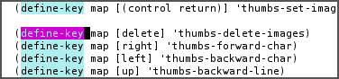
Within incremental search, you can type C-s again at any time to jump to the next occurrence.
When you've found what you're looking for, you can either type RET (or use almost any movement command) to exit search at the occurrence you've found, or C-g ("cancel") to return to where your search started. If you exit search at the found occurrence, you can easily jump back to where you started with C-x C-x since incremental search sets mark appropriately.
These commands help you to issue previously issued queries:
| C-s C-s | Search for most recently searched item |
| C-s M-p | Previous item in search history |
| C-s M-n | Next item in search history |
| C-h k C-s | Guide to more commands available in incremental search |
You can perform a backward incremental search with C-r. (All the above commands can be activated similarly from within backward search.) At any time during a forward (or backward) search, you can type C-r (C-s) to switch to a backward (forward) search.
| C-r | Backward incremental search |
See (info "(emacs)Incremental Search") for more information.
4.8 Search and replacement
| M-% | Query replace |
The query replace command prompts you for a search string and a replacement. Then, for each match in the buffer, you can choose whether or not to replace the search string. Here are some of the options available at each prompt:
- Type
yto replace the current match. - Type
nto skip to the next match without replacing. - Type
qto exit without doing any more replacements. - Type
.to replace this match, then exit. - Type
!to replace all remaining matches with no more questions.
See (info "(emacs)Query Replace") for more information about these (and other) options. You can also type ? anytime inside a search-and-replace operation to see a guide.
4.9 Regular expression search
Emacs allows you to search for regular expressions:
| C-M-s | Regular expression incremental search |
Regular expressions are a succinct way of searching for many different strings at once by using a special language to describe the form of what you're looking for. Regular expression syntax is beyond the scope of this tour; see (info "(emacs)Regexps") for more information.
If you're new to regexps, or you are constructing a particularly complicated regexp, you can use the regexp builder (M-x re-builder). This command pops up a separate window in which you can test out your regexp, and any matches in your original buffer will get highlighted as you edit your regexp.
Instead of jumping through matches one by one, you can also choose to display them all at once. M-x occur prompts you for a regular expression, then displays in a separate buffer a list of all lines in the current buffer which match that regexp (as well as their line numbers). Clicking on any occurrence takes you to that line in the buffer.
4.10 Regular expression search and replacement
Regular expressions are even more powerful in search and replace, because Emacs allows the replacement text to depend on the found text. You can control replacement by inserting special escape sequences in the replacement string, and Emacs will substitute them appropriately:
| replacement string: | Emacs replaces it with: |
|---|---|
| \& | the original found text |
| \1, \2, etc. | the 1st, 2nd, etc. parenthesized subgroup in the found text |
| \# | the number of replacements done so far |
| \? | a string obtained by prompting the user on each match |
| \,(lisp-expression …) | the result of evaluating an arbitrary function |
Here's an example. Suppose we have a buffer containing names like this:
George Washington John Adams Thomas Jefferson James Madison James Monroe
If we run M-x replace-regexp and replace the regexp \(\w+\) \(\w+\) with \,(upcase \2), \1, our buffer now looks like this:
WASHINGTON, George ADAMS, John JEFFERSON, Thomas MADISON, James MONROE, James
As you can see, regexp replacement is capable of doing some pretty sophisticated transformations. (Roughly, the search expression searches for two words; the replacement string inserts an uppercased version of the second word, followed by a comma, followed by the first word.)
4.11 Keyboard Macros
Keyboard macros are a way to remember a fixed sequence of keys for later repetition. They're handy for automating some boring editing tasks.
| F3 | Start recording macro |
| F4 | Stop recording macro |
| F4 | Play back macro once |
| M-5 F4 | Play back macro 5 times |
| M-0 F4 | Play back macro over and over until it fails |
For example, this sequence of keys does the exact same transformation that we did with regular expression replacement earlier, that is, it transforms a line containing George Washington to WASHINGTON, George:
M-d C-d M-u , [SPC] C-y C-n C-a
After we record that key sequence as a macro, we can type M-0 F4 to transform the buffer pictured earlier; in this case, Emacs runs the macro repeatedly until it has reached the end of the buffer.
See (info "(emacs)Keyboard Macros") for more information.
5 Help with commands
If you've read this far, you are probably intimidated by the thought of having to remember a bunch of keyboard commands and command names. Fortunately, Emacs includes comprehensive and easily accessible documentation. The documentation isn't just for beginners. Emacs has thousands of commands, of which most people only use a small number. So even Emacs experts frequently consult the docs in order to learn about new commands or jog their memory on old ones.
If you don't remember what a particular key or command does, you can read a description of it by using one of the following commands:
- C-h k
Shows documentation for the command associated with any particular key. - C-h f
Shows documentation for any particular command, by name (i.e. what you would type afterM-x).
For example, C-h k C-s and C-h f isearch-forward RET both display a page describing incremental search:
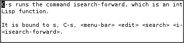
This is handy, for example, if you don't remember what C-s does, or if you remember that it invokes incremental search but want to know more about that feature. The documentation gives the full name of the command, shows which (if any) keys are bound to it, and gives a complete description of what the command does.
On the other hand, if you don't remember how to invoke a particular feature, you can use apropos to search for it:
- C-h a
Search for commands by keywords or regexp
For example, if I remember that I want to activate narrowing, but don't remember how, I can type C-h a narrow RET which shows a brief list of commands having to do with narrow, one of which is M-x narrow-to-region.
6 More useful features
6.1 Integration with common tools
Emacs is notable for its integration with many common tools. Not only can you invoke them from within the editor, Emacs usually helps you use their output more effectively. Here are some examples:
- M-x shell
Starts a shell in the buffer named *shell*, switching to it if it already exists. UseC-u M-xshell to use a buffer with a different name.
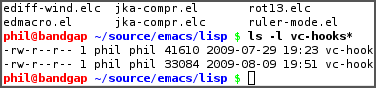
- M-x compile
Invokes make (with targets and options of your choice) and displays output in a new buffer. Emacs identifies error lines containing filenames and line numbers, and you can click on them to jump directly to the corresponding buffer and line.
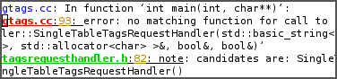
- M-x gdb
Invokes gdb in a new buffer. You can use thegdbcommand line as usual in that buffer. However, Emacs lets you set breakpoints directly from your source buffers and shows execution by marking the active line in your source buffers. Emacs can also display breakpoints, the stack, and locals, simultaneously and each in their own window.
- M-x grep
Invokes grep and prints results in a new buffer. LikeM-x compile, when you click on a match Emacs opens the correct file and takes you to the matching line.
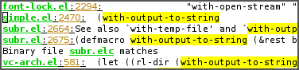
- M-x man
Displays man pages.
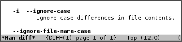
Here are some more assorted tools:
| M-x calculator | A simple calculator. |
| M-x calendar | A calendar. |
| M-x phases-of-moon | Shows upcoming quarters of the moon. |
6.2 Invoking shell commands
If you need to execute a simple shell command, these commands can save you the trouble of switching to an xterm or starting a new Emacs shell buffer:
- M-x shell-command or M-!
Executes a command and displays the output in a new buffer. - M-x shell-command-on-region or M-|
Executes a command, piping in the current region as input; displays the output in a new buffer.
For either command, a C-u prefix will insert the output in your current buffer rather than using a temporary buffer.
6.3 Version control
Emacs helps you manipulate and edit files stored in version control. Emacs supports CVS, Subversion, bzr, git, hg, and other systems, but it offers a uniform interface, called VC, regardless of the version control system you are using.
Emacs automatically detects when a file you're editing is under version control, and displays something like this in the mode line: CVS-1.14 to indicate the version control system in use, and the current version.
M-x vc-next-action or C-x v v commits the current file (prompting you for a log message) if you've modified it. (Under version control systems that require locking, this command also acquires a lock for you.)
VC provides other commands for version control-related tasks:
- C-x v =
Displays a diff showing the changes you've made to the current file. - C-x v ~
Prompts you for a version number and shows you that version of the current file in another window. - C-x v g
Displays an annotated version of the file showing, for each line, the commit where that line was last changed and by whom. On any line you can pressLto view the log message for that commit or D to view the associated diff. - C-x v l
Displays a log of previous changes to the file. When the cursor is on a particular log entry, you can pressdto view the diff associated with that change orfto view that version of the file.
See (info "(emacs)Version Control") for more information.
Some special features are enabled when you are looking at a diff (whether from a file, or one produced by VC). Emacs lets you move around in a diff by hunks or files, apply individual hunks to a file, reverse a diff, and do other operations useful for reading or manually editing diffs.
See (info "(emacs)Diff Mode") for more information.
6.4 Editing remote files
Emacs can edit remote files transparently (as if they were local) using a feature called Tramp. Whenever Emacs asks for a file, you can indicate a remote file like so: /myname@remotehost:/remote/path/to/file. Emacs retrieves the file over SSH, FTP, or another method and takes care of saving it when you're done. With Tramp you can edit files on different computers using a single Emacs session, even if Emacs is not installed on the remote side.
You can also use Tramp to edit local files with another user's permissions. You can edit files with root privileges via sudo: /sudo::/etc/file, or via su: /root@localhost:/etc/file.
See (info "(TRAMP)") for more information.
6.5 Emacs server
Some people like to keep only a single instance of Emacs open and edit all their files in there. Doing this has a few advantages:
- You can kill/yank text between buffers in the same instance of Emacs.
- Emacs remembers argument histories (what commands you've used, what files you've opened, terms you've searched for, etc.), but only within each instance.
- If you have many customizations, starting new instances of Emacs is slow.
Alas, when you type emacs in a shell to edit a file (or when $EDITOR is invoked by an external program), a new instance of Emacs is started. You can avoid this by using emacsclient, which instead opens a new frame connected to an existing instance of Emacs:
- In your existing instance of Emacs, type
M-x server-start. Or add(server-start)to your.emacsfile to make it do that automatically at startup. - To edit a file, type
emacsclient -t FILENAMEat a prompt. You can also change your$EDITORtoemacsclient -tif you're using programs that automatically invoke$EDITOR. (emacsclient -topens a new frame on the terminal; alternatively,emacsclient -copens a new X frame.) - When you're done editing, type
C-x C-c, which closes the frame.
For more information, see (info "(emacs)Emacs Server").
6.6 Being unproductive with Emacs
Emacs even comes with diversions:
| M-x tetris | Tetris |
| M-x hanoi | Towers of Hanoi game |
| M-x doctor | Emacs psychotherapist |
7 Common Emacs concepts
7.1 Prefix arguments
As we've seen, prefix arguments are sometimes used to indicate repetition:
| C-u 10 C-f | Forward 10 characters |
| C-u M-a | Backward 4 sentences |
We've also seen a prefix argument used to modify the following command (the numeric argument, if provided, is ignored):
| M-x shell | Create or switch to shell buffer named *shell* |
| C-u M-x shell | Create or switch to shell buffer with specified name |
If you ever get confused, the documentation for any command (accessible with C-h f or C-h k) describes the effect of the prefix argument, if any.
See (info "(emacs)Arguments") for more information.
7.2 Major modes
Every buffer has an associated major mode, which alters certain behaviors, key bindings, and text display in that buffer. The idea is to customize the appearance and features available based on the contents of the buffer.
Emacs ships with dozens of major modes for editing widely used programming languages, markup languages, and configuration file formats. These major modes tell Emacs how to:
- Indent your code correctly (usually, simply pressing
TABonce will make Emacs indent the current line correctly). - Do syntax highlighting
- Identify the boundaries of functions
- Invoke interpreters, compilers, or debuggers for your code.
Some commands we've seen, like M-x dired, M-x compile, and M-x shell, in fact use their own special major modes to make their buffers provide certain features (such as highlighting compile errors and making them clickable).
The current major mode is displayed in the mode line. The last thing on the mode line should be one or more items in parentheses, like (Python Narrow). The first of these is the name of the major mode.
You can switch modes in an existing buffer by using M-x and the name of the mode:
| M-x java-mode | Mode for editing Java files |
| M-x python-mode | Mode for editing Python files |
| M-x text-mode | Mode for editing text files |
| M-x fundamental-mode | Mode with no specializations at all |
Emacs is very good at determining the right mode to use when you open a file, so you'll rarely have to use the above commands.
These are examples of the commands provided by language major modes:
| Language | Some special commands available |
|---|---|
| Lisp | Manipulate s-exps in various ways; execute expressions |
| Python | Indent, unindent blocks; run code in Python shell |
| HTML | Insert and close tags; preview in browser |
In almost all cases, major modes for unsupported formats are available as extension packages. You can find many of them on EmacsWiki.
See (info "(emacs)major modes") for more information.
7.3 Minor modes
Every buffer can also have any number of minor modes, which are extra pieces of functionality you can enable, independently of each other and of the major mode. Minor modes are listed in the mode line after the major mode inside the parentheses. Here are a few commonly used ones:
- M-x auto-fill-mode
Wraps your lines automatically when they get longer than 70 characters. - M-x flyspell-mode
Highlights misspelled words as you type. - M-x follow-mode
If you have a buffer displayed in two windows side by side, follow-mode forces them to scroll together such that the text displayed in the second window comes right after the text in the first window, and moving your cursor off the bottom of the left window causes it to appear at the top of the right window:
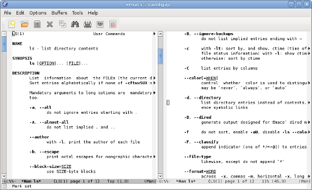
Some minor modes are global, i.e. they affect the behavior of the entire editor, rather than just that of a specific buffer.
| M-x icomplete-mode | In the M-x prompt (and elsewhere), show completions as you type |
| M-x iswitchb-mode | Show all buffer names when you switch buffers with C-x b |
See (info "(emacs)Minor Modes") for more information.
If you need help with a particular mode, C-h m describes the active major and minor modes. The mode description often lists important commands which are useful in that mode, which is helpful when you're learning to use a new mode.
7.4 The minibuffer
The minibuffer (the space at the bottom of the frame) is where Emacs prompts you for input in most situations: for a command, when you type M-x for a file name, within M-x find-file for an Elisp expression, within M-x eval-expression, etc. Here are some features common to most minibuffer prompts:
- You can use most buffer editing and movement commands. You can move around in, kill text from, and yank text to minibuffers.
- You can browse previous inputs to the current prompt using
M-pandM-n. - Tab completion is often available. For example, the
M-xprompt offers tab completion, so you needn't worry about typing long command names likeM-x wdired-change-to-wdired-modewhenM-x wdired-ch TABsuffices.
8 Tips for beginners
8.1 In the event of an emergency …
Here's what to do if you've accidentally pressed a wrong key:
- If you executed a command and Emacs has modified your buffer, use
C-/to undo that change. - If you pressed a prefix key (e.g.
C-x) or you invoked a command which is now prompting you for input (e.g. Find file: …), typeC-g, repeatedly if necessary, to cancel.
C-g also cancels a long-running operation if it appears that Emacs has frozen.
8.2 Keyboard and terminal setup
Some Emacs users remap their Caps Lock key to act as an additional Ctrl key, because it is easier to reach. See instructions for moving Ctrl.
Due to your keyboard or terminal configuration, you may find that some keys seem to do the wrong thing:
If your DEL key is not working (sometimes, typing DEL brings up a help screen, as if you typed C-h), try M-x normal-erase-is-backspace-mode.
If your meta key is not working, in order to type a key that contains meta, you can instead type ESC, then the remaining keys. For example, ESC x is the same as M-x, and ESC C-s is the same as C-M-s.
8.3 Frequently asked questions
Emacs comes with a FAQ which explains how to perform many commonly requested tasks; press C-h C-f to read it.
9 Migrating to Emacs
Emacs has a number of options for easing the transition from other editing environments.
9.1 Emacs for Windows users
In Windows, the bread and butter editing commands are C-z, C-x, C-c, and C-v. Unfortunately, these keys are frequently used in Emacs for other purposes (suspend, prefix key, prefix key, and next page). You can get those keys back for Undo, Cut, Copy, and Paste by turning on "CUA mode" from the Options menu. CUA mode also lets you make a selection by using Shift in combination with movement keys, as you would do on Windows.
Since C-x and C-c are so integral to Emacs operation (they are prefix keys for many commands), CUA mode only binds C-x and C-c to Cut and Copy, respectively, when you have selected some text.
You can learn more about CUA mode by typing C-h f cua-mode RET.
9.2 Emacs for vi/vim users
Viper (M-x viper-mode) is a set of modes for emulating vi editing behavior in Emacs. It provides different levels of vi-adherence, depending on how vi-like you want your Emacs to be.
For more information about Viper, see (info "(viper)").
10 Emacs resources
The GNU Emacs Manual (C-h r) is the definitive guide if you want to learn more about Emacs. Some Emacs features have their own, separate manuals (C-h i d).
The GNU Emacs FAQ (C-h C-f) answers many questions that beginners have about how Emacs works and how to set it up to do particular things.
EmacsWiki contains information about many downloadable Emacs extensions, as well as tips for using and customizing Emacs.
You can ask questions on the help-gnu-emacs mailing list.